Ceiling, factory lights and fans; walls raised to clear a 5-box stack
Box decals and a ?debug overlay
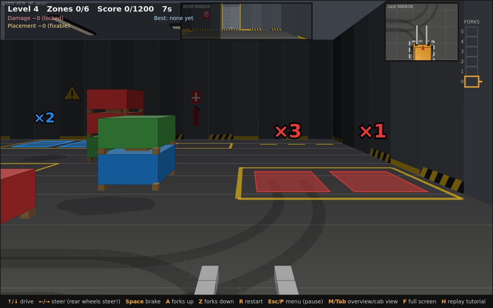
Floor and wall decals (aed730f)
Day 5 · 25 Oct
Sound, saves & touch
Reversing beep and a blue reversing light that walls cut off
Selectable MIDI music (public domain / CC0) with a drum synth; wall bonk and scrape sounds
Progress saved in localStorage; export/import of level state
Wall-mounted charger to park against; carried stacks can't be lifted into the ceiling
On-screen touch controls and an installable PWA
First version of this presentation
Days 6–7 · 26 – 27 Oct
On the phone
Rotatable landscape layout: field on top, steering bottom left, drive/forks bottom right, minimap and status between
Zoomed follow-camera overview; the map pans past its edges so pads never hide it
Brake removed (engine braking does the slowing); touch start enters full screen
Touch state derived from live touches (fixes flaky PWA steering); service worker bypasses the HTTP cache
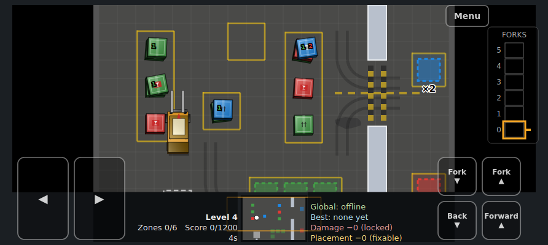
Landscape: steering left, drive and forks right, minimap and status between
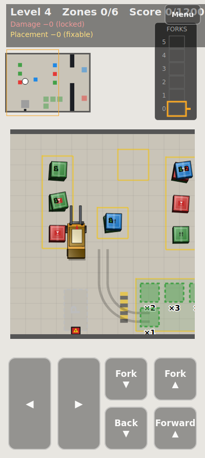
Portrait
Day 8 · 28 Oct
A splash with style
Splash: a forklift drifting a figure eight with smoke, boxes and permanent skidmarks
Higher wall/floor contrast; the in-game forklift restyled to match the splash
Bigger levels now that the map pans
Fullscreen is an opt-in menu setting; pause-menu touches no longer reach the pad
Service worker auto-reloads on a new version
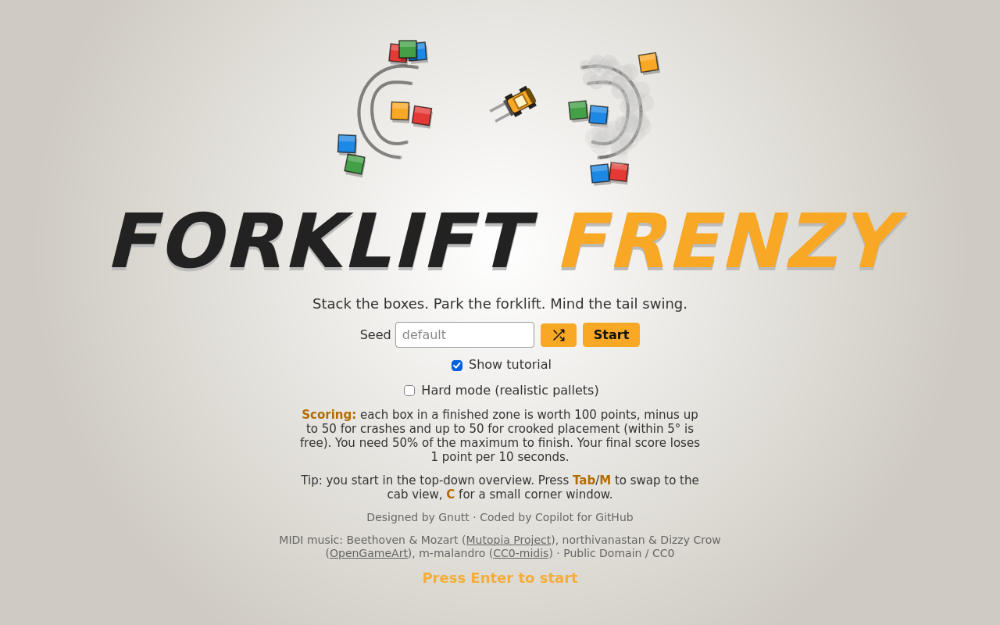
The splash screen
Day 8 · 28 Oct
New soundtrack & calmer menus
Music library replaced: country, classical, industrial metal, techno and more, all CC0 / public domain
Music keeps playing in the pause menu and when focus is lost
Tutorial restart moved from the H key to a pause-menu button
Pause-menu shortcuts for tutorial, resume, auto-fullscreen and hard mode dropped
Days 8–9 · 28 – 29 Oct
The cabin view, rebuilt
Cabin renderer rewritten as modular js/pov/, first with identical output
New forks and camera: the eye follows fork height and the view tilts with the forks
More factory fluff: AC units, toilet doors, deer sign, roller doors and slogan posters
Doorways with hazard thresholds, jamb posts and a header beam
Faster: occlusion and off-screen culling, batched floor decals
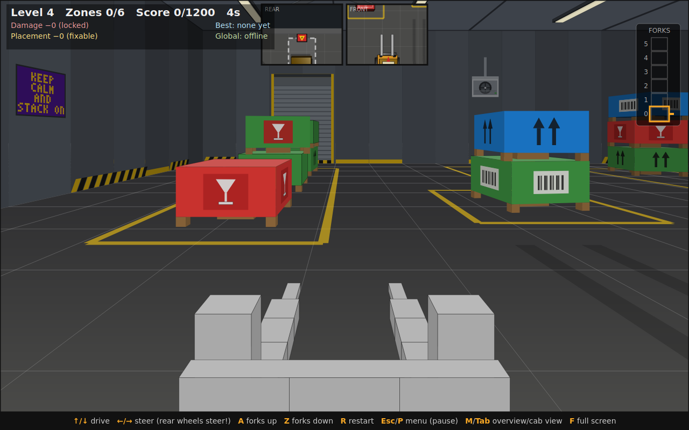
Cabin view with poster, AC unit, roller door and look windows (HEAD)
Days 9–10 · 29 – 31 Oct
Look windows & a calmer floor
Mirrors replaced by two small top-down look windows: just ahead of the forks and just behind the tail
Start stacks cluster in bays with a big yellow outline; fewer random floor decals, yellow kept out of doorways
Cabin zone labels are clipped by walls and boxes in front of them; longer decal draw distance
The static top-down floor is cached in an offscreen canvas
Touch easter egg: tap the minimap to swap overview and cab view
Day 12 · 1 Nov
Online scores & a testing site
Local high scores are uploaded to an online server; the HUD and a start board show local and global best
GitHub Pages workflow deploys main to the site and testing to /testing/
Everything except the production host gets a red TESTING banner and favicon; scores are only posted from production
Touch polish: centred two-row button labels, overview forced in portrait, pad ignored behind overlays
Backing box behind the fork level gauge
Days 12–13 · 1 – 2 Nov
Wonky stacks & sturdier levels
Fresh stacks start slightly crooked; crooked zone stacks get a popup and a sad wah-wah (an off-key success chime)
Level generator rejects levels with unreachable stacks or zones and retries the same level
Saves validate the full snapshot and persist the game clock
Dead-code audit; shared drawing for extruded box and forklift sides
43 humorous slogan posters for the walls (a few on the next slide)
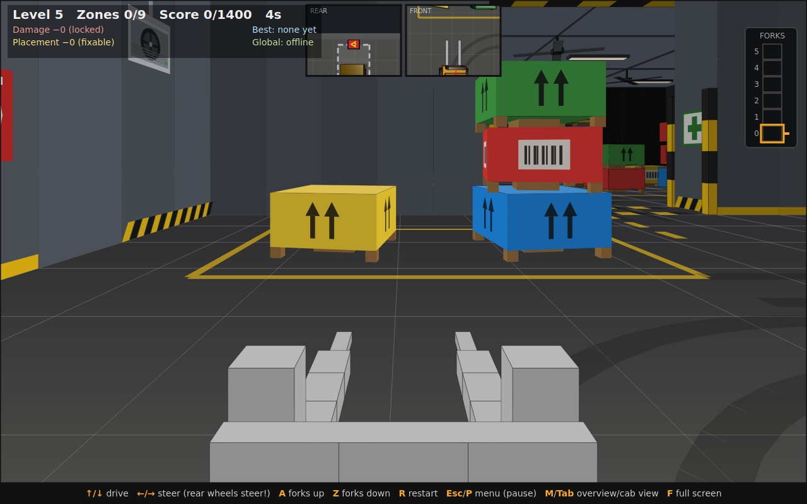
A wonky stack in the cabin view (HEAD)
Wall posters
Slogans on the factory walls
A handful of the 43 slogans
Day 15 · 4 Nov
Disco in the dark
Dark mode gets glitter balls and coloured light pools sweeping the floor, in the cabin view and (as lights only) the overview
Balls are scattered randomly per level; the forklift carries its own light
Menu options: disco lights on/off, and colour mode Follow OS / Light / Dark
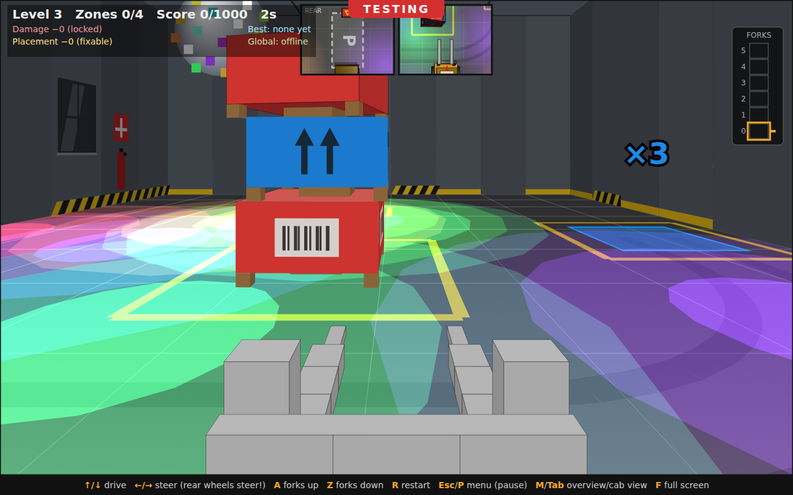
Disco lights in the 3D cabin view (HEAD, dark mode)
Day 15 · 4 Nov
Renamed: Pallet Polka
The game became Pallet Polka: new title on the splash and wall posters, polka MIDI as default music
Cover image (SVG source + PNG), a short description text and a new production address, palletpolka.gnutt.se
Level start and end screens show the local and global top 10
Day 18 · 7 Nov
True 3D with WebGL2
The overview, cabin view and look windows are now real 3D scenes (depth buffer, lighting, fog), no libraries; the 2D renderers remain as a fallback (?gl=0)
Dark mode headlights, brake/reverse lights, an idle tail glow, ceiling lights and disco spots as real point lights
Richer forklift model: carriage plates, lift chains, mast head and cylinder rod
Wall decals and zone labels painted into the 3D overview
Damaged boxes crumple: dented lids, corners and sides, scaled by damage
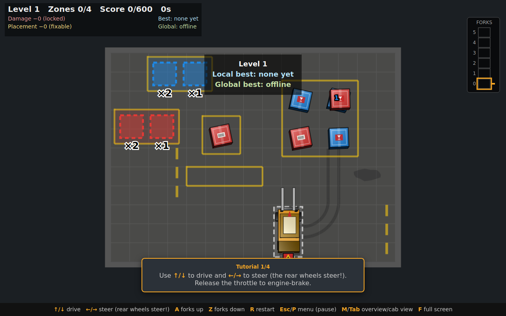
The 3D overview in dark mode (HEAD)
Day 18 · 7 Nov
A new menu, splash & touch schemes
Pause menu redesigned: one option per row, submenus for sound, visuals, levels and state, primary actions on top
Short landscape phones get a two-column menu
Splash: Disco start button with a dancing man, a story blurb, random music; music and disco are off by default
Touch control schemes: classic buttons, rotated buttons, or a virtual joystick with fork buttons
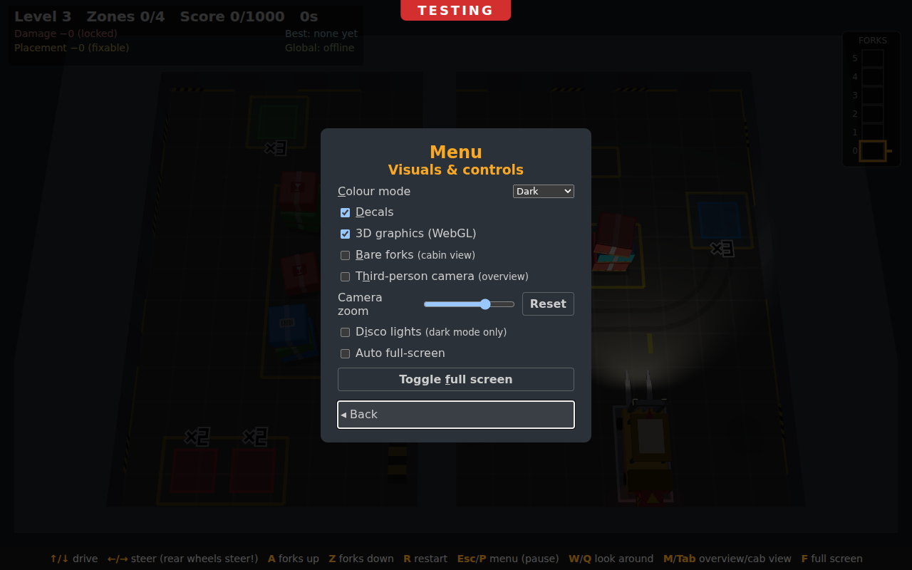
The Visuals & controls submenu (HEAD, dark mode)
Day 18 · 7 Nov
Splash and joystick on the phone
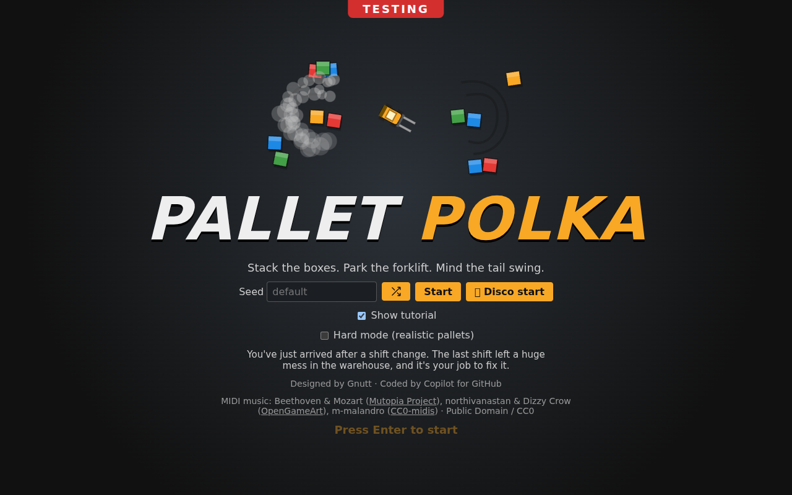
Splash screen, dark mode
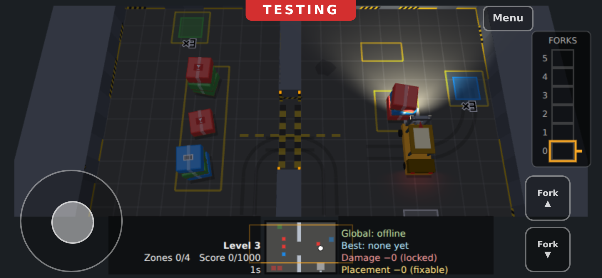
Joystick scheme, landscape
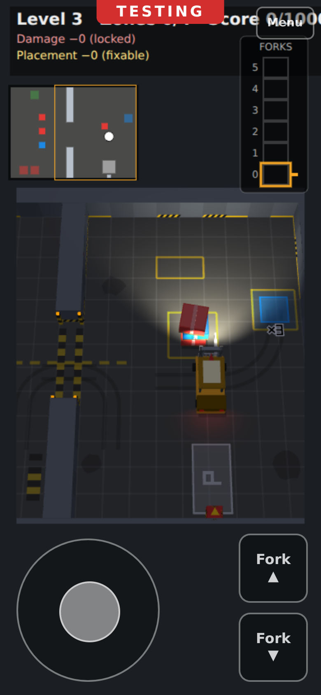
Portrait
Day 19 · 8 Nov
Chase camera & look around
Third-person chase camera for the overview (C, menu option or double tap): spring-mounted, orbits to the front when reversing and upwards when a wall hides the forklift
Drag to orbit the overview; W/Q or drag to look around in the cabin; camera zoom slider with reset
The overview cuts walls at a low height; the minimap shows the chase camera's floor footprint
D/R gear state drives reverse lights and beeper; a mirrored reversing-camera inset in the cabin
"Bare forks" option for an unobstructed cabin view
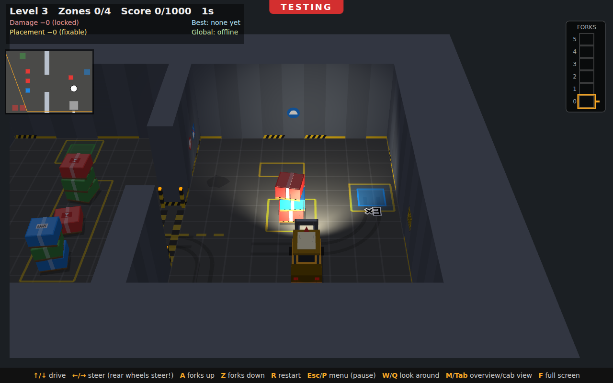
Chase camera with minimap footprint (HEAD, dark mode)
Day 19 · 8 Nov
Doorway flair & tidier walls
Doorways get hazard chevrons on the wall ends, amber beacons on the jamb posts and a glowing header lamp
Roller doors and window signs on outer walls only; no decals inside doorways; toilet doors stay off interior walls
GL overview walls use the cabin-view look; dark-mode ceiling spots with capped strength
Look windows separated in the touch landscape cabin view; ?skip URL parameter bypasses the splash
Days 20–21 · 9 – 10 Nov
Multiplayer: up to four trucks
Host a game from the splash or the in-game menu; friends join with a party code (WebRTC, host is authoritative)
Shared level and score; each truck has its own colour, gauge and lights
Trucks collide; hand over or split carried stacks with your tines
Guests predict their own truck, so high ping does not hurt driving
Menu roster with ping, kick and ban; sounds from other trucks fade with distance
Horn on H with floating HOOOONK labels
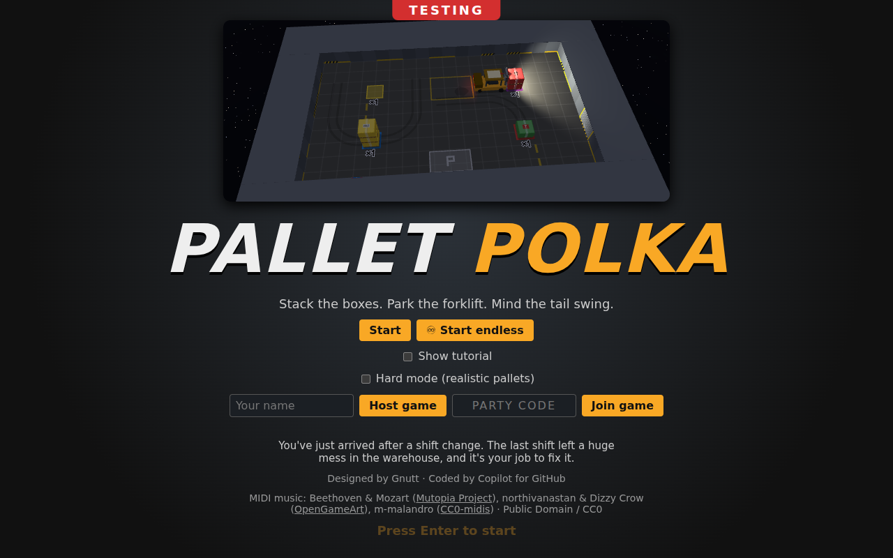
Host / join on the splash screen
Days 20–21 · 10 – 11 Nov
Sparks, smoke & impact physics
GL particle effects: sparks on wall scrapes, tyre and damage smoke, dust and confetti
Tyre squeal while the wheels spin
Off-centre hits spin and skid the truck; stacks pivot, and fast impacts topple upper boxes onto nearby stacks
Multiplayer trucks pop in and out with smoke, stars and a pop sound
North compass and a minimap with truck arrows
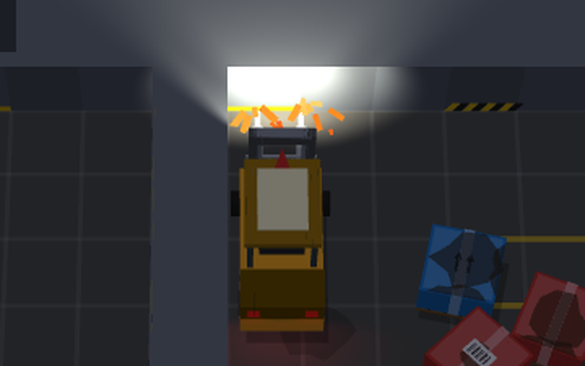
Sparks flying after a wall scrape
Days 20–23 · 10 – 12 Nov
Endless mode: lorries & loading bays
New Start endless mode: lorries arrive at the incoming bays, you unload them and load the delivery trucks
Delivery lorries check the tines are clear, honk, then open and close their gates
Numbered bays with waiting times; the pace adapts to the measured unloading rate (and crew size)
Running score, autosave, local and global endless high scores; works in multiplayer
Lorries redesigned with roofs and closed doors; starry void (dark) or sky with clouds (light)